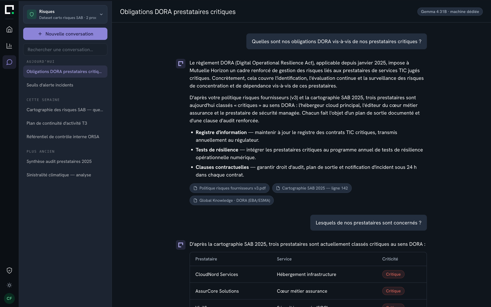

Observez, comprenez et agissez grâce à notre plateforme IA conçue pour rendre vos données accessibles et parlantes — sur une infrastructure dédiée, en France.
QueryVision opère sa plateforme en propre : ni prestataire, ni intégrateur tiers dans la chaîne de fourniture. L'ensemble du code source, des algorithmes et de la documentation appartient à QueryVision.
| Raison sociale | QueryVision, S.A.S. |
| Siège social | 9, place Jean Jaurès, 33000 Bordeaux |
| Secteur | Édition de logiciels — IA appliquée à l'analyse de données d'entreprise |
| Résidence des données | Union européenne uniquement |
Siège à Bordeaux. Ouvertures annoncées à Paris et Bruxelles en 2026, puis Genève, Luxembourg et Casablanca en 2027 — projets annoncés, non encore en activité.
Moyennes et grandes organisations — assurance, mutualité, protection sociale, banque et industrie.
La plateforme couvre les deux natures de données de l'entreprise. Le degré de spécialisation métier diffère selon l'agent — c'est ce qui détermine la population concernée.
Cinq domaines, chacun avec son vocabulaire, ses référentiels et un corpus métier de référence intégré à la plateforme.
Le périmètre n'est pas défini par un métier, mais par les corpus confiés. Spot Vision s'adresse à toutes les directions et, selon le corpus, à l'ensemble des collaborateurs.
Les deux agents partagent la même plateforme, la même gouvernance et la même infrastructure.
Interroge des données structurées en langage naturel. Traduit la question en requête, l'expose, la vérifie, l'exécute, puis restitue une réponse chiffrée avec sa visualisation et ses sources.
Interroge en langage naturel des corpus documentaires confiés : procédures, historiques contractuels, archives financières, plan stratégique, référentiels métier.
Des centaines de pages de procédures, de contrats ou d'archives deviennent une conversation : chacun pose sa question et obtient la réponse exacte, fidèle au texte de référence.
Fini les recherches par mots-clés et les versions qui circulent. Le contenu validé est diffusé en direct, à toute l'organisation.
Les corpus sont rattachés à des espaces de travail ; les droits d'accès suivent votre organisation. L'agent ne promet jamais ce qu'il n'a pas.
Chaque réponse cite le document et le passage dont elle est issue. La réponse est vérifiable, pas seulement plausible.

Piliers, objectifs, fiches actions — chaque manager interroge la même version de référence.
Modes opératoires, politiques, circuits de validation — la règle applicable, sans chercher où elle se trouve.
Contrats cadres, avenants, clauses — le contenu contractuel répond directement, article à l'appui.
Rapports annuels, notes de clôture, règles de gestion passées — la mémoire financière reste consultable.
Spot Vision ne localise pas les fichiers dans votre système d'information et ne produit pas de synthèse documentaire généraliste : il répond sur le fond des corpus qui lui sont confiés.
Un plan stratégique se décline en piliers, objectifs et fiches actions. Chaque direction doit y lire sa propre déclinaison, sans réinterprétation ni version parallèle. C'est le cas d'usage canonique de Spot Vision : un corpus de référence, une population large, un besoin d'homogénéité.
Tous les managers interrogent la même version validée. La réponse ne dépend ni du lecteur ni du document qu'il a sous la main.
De quelques dizaines à plusieurs milliers d'utilisateurs, sans formation préalable : l'interface est une question en langage naturel.
Contenus validés avant mise à disposition, périmètres cloisonnés par direction, administration par vos propres équipes.
Vous désignez les corpus de référence. Ils sont préparés, contrôlés et validés via la Secure Intake Gateway. Aucune donnée n'entre en production sans validation.
Chaque référentiel est rattaché à un espace de travail, avec des droits d'accès par équipe et par utilisateur, administrés par vos équipes.
Vos équipes posent leurs questions en langage naturel et obtiennent des réponses fidèles au contenu, sources citées, dans leur périmètre.
L'intégration initiale des données est réalisée par l'équipe Data Quality & Integration de QueryVision : le client n'a pas de chantier de restructuration de données à mener avant de démarrer.
Principal élément différenciant sur le plan technique et contractuel. Les données ne sont jamais mutualisées entre clients.
Aucune donnée client n'est utilisée pour entraîner un modèle — qu'il s'agisse des modèles de QueryVision ou de ceux de tiers. Cet engagement est contractuel.
QueryVision n'est lié à aucun fournisseur de modèle unique. Le choix du modèle est configurable par espace de travail et par produit, sous le contrôle de vos administrateurs.
| Mode | Modèles | Localisation d'exécution |
|---|---|---|
| Par défaut | Modèles ouverts auto-hébergés — Qwen, Gemma et équivalents | Dans l'infrastructure dédiée du client |
| À la demande | Mistral, OpenAI, Anthropic, ou tout modèle exposant une API compatible OpenAI | API publique du fournisseur, sur décision explicite du client |
En configuration standard, l'inférence ne quitte pas l'infrastructure souveraine : aucune donnée client ne transite vers un tiers pour le traitement IA.
Pour un accès aux modèles Mistral en mode API avec garantie contractuelle zero-retention : aucune donnée conservée ni utilisée pour l'entraînement.
La sécurité est placée sous la responsabilité du CTO. Les mesures techniques et organisationnelles sont formalisées dans le Plan d'Assurance Sécurité (PAS), accessible aux clients et prospects qualifiés sur demande.
SSO, MFA, gestion des habilitations par rôle (RBAC), droits fins par ligne et par colonne.
Chiffrement des données en transit et au repos ; base de données chiffrée ; protocoles à l'état de l'art.
Isolation des environnements, cloisonnement par espace de travail, séparation stricte inter-clients.
Journal d'audit natif et traçabilité continue de chaque requête : auteur, périmètre, résultat.
Nombre limité, tous localisés en UE, soumis à des clauses de confidentialité et de sécurité strictes. Toute évolution est notifiée avant prise d'effet. Registre exhaustif et DPA sur demande.
Processus formalisé, aligné RGPD et ANSSI : délais de notification client, matrice de classification impact/urgence. Signalement : security@query.vision
Certifications de l'hébergeur acquises ; celles de QueryVision en tant qu'éditeur en cours d'obtention. Statuts tenus à jour dans le Trust Center.
| Référentiel | Statut | Détail |
|---|---|---|
| RGPD | Natif | DPO désigné, registre des traitements, droits utilisateurs, données stockées au sein de l'UE. |
| ISO/IEC 27001 — hébergeur | Certifié · Scaleway | Scaleway, hébergeur de l'infrastructure, est certifié ISO/IEC 27001. |
| HDS — hébergeur | Certifié · Scaleway | Certification Hébergement de Données de Santé, permettant l'usage en contexte médical. |
| ISO/IEC 27001 — QueryVision | En cours · 2026 | Certification de QueryVision en tant qu'éditeur, prévue pour fin 2026. |
| ISO/IEC 42001:2023 — QueryVision | Prévu | Management de l'intelligence artificielle (AI management systems). |
| SecNumCloud ANSSI — hébergeur | En cours · Scaleway | Scaleway engagé dans la qualification SecNumCloud (échelon J1) ; finale visée Q3 2026. |
| HDS — QueryVision | En cours | Certification HDS de QueryVision en tant qu'éditeur, en cours de planification. |
| NIS 2 | En cours | Analyse d'impact NIS 2 en cours ; mise en conformité dans la roadmap sécurité 2026. |
| SOC 2 Type II | Prévu 2027 | Attestation SOC 2 Type II (Trust Service Criteria) planifiée pour 2027. |
| Engagement | Valeur |
|---|---|
| Disponibilité cible | 99,5 % / mois |
| Plage de support | 8h00–18h30, jours ouvrés |
| GTI anomalie bloquante | 24 h ouvrables |
| GTR anomalie bloquante | 48 h ouvrables |
| GTI anomalie non bloquante | 48 h ouvrables |
| GTR anomalie non bloquante | 2 semaines |
| Résidence des données | Union européenne |
| Entraînement sur données client | Exclu contractuellement |
GTI : garantie de temps d'intervention · GTR : garantie de temps de rétablissement
Catégorie EPM/CPM (Anaplan, Pigment, Board). QueryVision analyse et restitue l'existant ; il ne gère ni construction budgétaire collaborative, ni simulation multi-scénarios.
Type Power BI, Tableau, Looker. QueryVision répond à des questions en langage naturel et compose la restitution ; il ne remplace pas un atelier de conception de tableaux de bord.
Les agents sont limités au périmètre de données et de documents confiés, et gouvernés par les droits du client.
Le modèle repose sur une infrastructure isolée par client. Les données ne sont jamais mutualisées entre clients.
Un déploiement démarre par une démonstration sur un échantillon réel, avec votre vocabulaire. L'intégration est ensuite prise en charge par l'équipe Data Quality & Integration, via la Secure Intake Gateway.
| Interlocuteur | Contact |
|---|---|
| Sécurité & conformité RSSI, DSI — questionnaires, PAS, tests d'intrusion | security@query.vision |
| Données personnelles DPO, juridique — droits RGPD, registre | dpo@query.vision |
| Contact général Démonstrations | contact@query.vision |
Toute demande de documentation est traitée sous 24 h ouvrées par l'équipe sécurité.
Nous restons à votre disposition pour approfondir l'un des points de cette présentation ou organiser une démonstration sur l'un de vos corpus.
contact@query.vision
partners@query.vision
security@query.vision